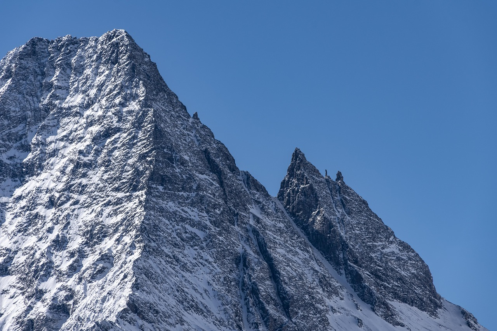
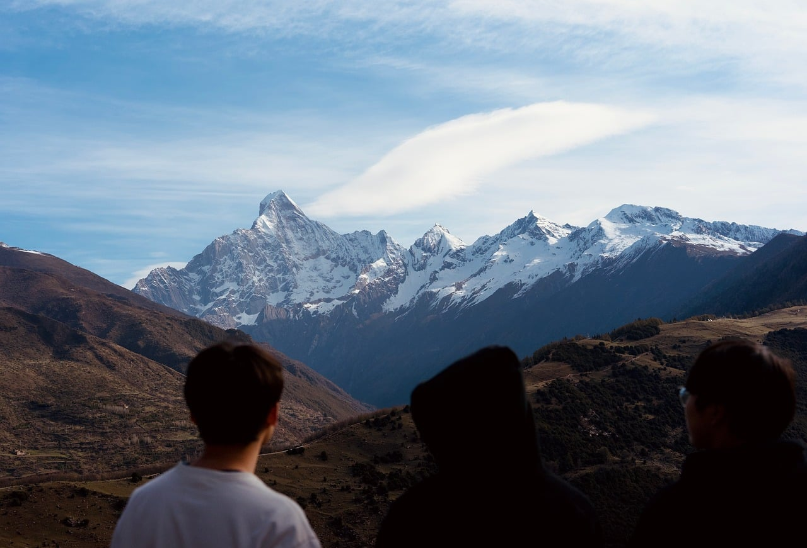

Portfolio
影像川西
我们的镜头常年行走在川西高原——雪山、云海、草甸与藏地人文，是椿野集最熟悉的创作语言。


椿野集 · 旅行摄影 / 内容创作 / 影像科技 —— 扎根四川，面向雪山
椿野集文化传媒（四川）有限责任公司是一家扎根四川的文化传媒企业，专注于川西高原旅行摄影与数字内容创作。我们以四姑娘山、塔公草原、稻城亚丁等川西经典目的地为创作现场，为旅行者提供专业旅拍服务，为文旅品牌提供短视频与影像内容解决方案。
在深耕摄影服务的同时，我们将多年现场拍摄经验沉淀为数字产品，自主研发摄影辅助软件，探索 AI 技术与旅行影像结合的更多可能。

四姑娘山、塔公草原、莫斯卡、稻城亚丁等线路的精品小团旅行摄影：专业摄影师随行，含路线规划、服装造型建议、现场姿态指导与精修交付，一次旅行带回一套完整的个人影像。
面向文旅品牌、民宿酒店与本地商户的商业拍摄服务：品牌宣传片、产品与空间摄影、活动纪实，从创意脚本到成片交付的全流程执行。
基于自研内容工作流方法论，为客户提供抖音、小红书等平台的账号定位、选题策划、脚本分镜、拍摄剪辑与数据复盘的一体化内容服务。
将专业摄影经验产品化：自主研发姿态指导、构图辅助与 AI 内容创作工具，服务摄影师与旅行创作者，让普通人也能拍出专业级旅行影像。
我们的镜头常年行走在川西高原——雪山、云海、草甸与藏地人文，是椿野集最熟悉的创作语言。
